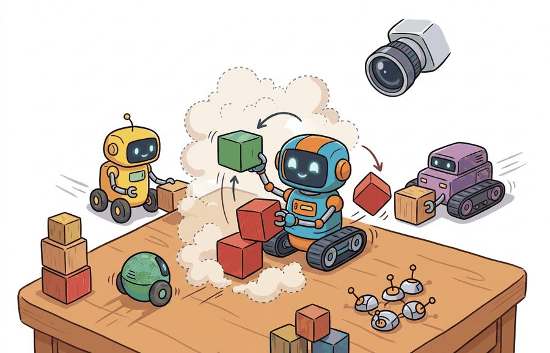
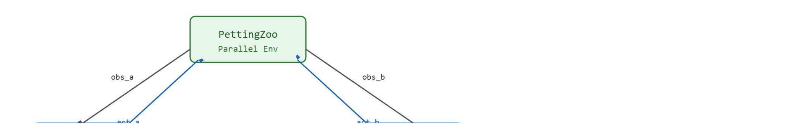
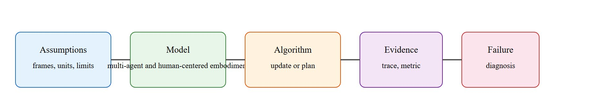

A team reward can be a beautiful hiding place for one very lazy policy.
A Markov Game Designer

This section assumes familiarity with single-agent policy gradient training from section 15.3 and the PettingZoo environment interface introduced in section 10.7. The centralized-training, decentralized-execution pattern developed here is extended by swarm coordination in section 49.5, and the per-agent evaluation metrics recur in section 52.2 alongside broader embodied-system benchmarking.
Two robot pursuers trained on independent rewards race to the same side of a target, collide, and fail to capture it 45% of the time. Switch to a shared team reward and capture climbs to 83%, yet entropy collapses and one agent stops exploring entirely: a free rider hidden inside a good team score. This is, in practice, a central tension in multi-agent RL today: as embodied systems move from solo robots to coordinated fleets, the tools for single-agent training break silently. PettingZoo gives you a standard interface that makes nonstationarity, credit assignment, and per-agent failure visible before they quietly undermine deployment. You will wire up the AEC and Parallel APIs, diagnose the lazy-policy failure mode, and ship a training loop you can actually trust.
Picture a Boston Dynamics Spot pair clearing a warehouse aisle and an iRobot-style coverage swarm: train either on a single team scalar and they fail the exact same way, with one unit quietly coasting on its partner's effort while the team score still looks healthy. Multi-agent RL becomes useful for an embodied fleet only when it is tied to a named interface (PettingZoo's AEC or Parallel API), a replayable scenario (the two-pursuer grid or a MuJoCo dual-arm box transport), a failure diagnostic (per-agent entropy and collision rate, not team return), and an artifact that records what changed in the control loop. The interface is what makes that coast measurable before the robots leave the lab.
The key question is practical: which API represents turns, simultaneous actions, observations, rewards, terminations, and per-agent metrics without hiding nonstationarity (the fact that, from any one agent's perspective, the environment's effective dynamics keep shifting because the other agents are also learning and changing their behavior)? Two interfaces answer it differently, where AEC (Agent Environment Cycle) steps agents one at a time in a defined turn order, and the Parallel API steps every agent at once in a shared control tick. The mechanical difference between these two APIs, and why picking the wrong one corrupts value estimates, is worked through in detail later in this section's "Misconception: AEC and Parallel APIs Are Interchangeable" callout; the short version needed for now is that Parallel matches robots acting in the same control tick, while AEC matches strictly turn-based interaction.
A representation earns its place when it changes the measurable action interface. In multi-agent rl (with pettingzoo), the reader should keep asking which decision becomes easier, safer, or more reliable.
For Multi-agent RL (with PettingZoo), the practical design rule is to make the interface inspectable before optimization begins: inputs, outputs, units, latency, bounds, and failure labels should all be visible in the saved artifact.
The mechanism in Multi-agent RL (with PettingZoo) is the contract between representation and action, sketched end to end in Figure 49.4A. Name what enters the module, what leaves it, which assumptions make that transformation valid, and which log would reveal a bad handoff.
That inspectable contract stops being abstract the moment you watch two agents try to coordinate on a single task, where every hidden assumption in the interface surfaces as a concrete behavior.
Consider a pursuit task where two agents learn to surround a target. Independent rewards can produce chasing; shared rewards can improve capture but make credit assignment harder (credit assignment: figuring out, from one team-level reward number, how much each individual agent's action actually contributed to the outcome). This is called the lazy-agent hiding problem, and it is the central diagnostic challenge in cooperative multi-agent reinforcement learning (MARL). PettingZoo makes those choices explicit in the environment interface.

Figure 49.4B shows the structural fix. Each agent acts only on its own local observation, while a centralized critic sees the global state during training alone. That is the contract the rest of this section relies on. In embodied AI, the lazy-agent problem carries physical consequences that simulation scores hide entirely. A robot that converges to a passive flanking role consumes battery, occupies floor space, and blocks corridors while contributing nothing to task completion. In warehouse fulfillment or search-and-rescue, that idle robot is not merely inefficient: it may block a critical path or fail to respond when the active agent is occluded by an obstacle. The team metric looks fine right up to the moment the scenario changes and the passive agent has no learned behavior to fall back on.
A policy trained on team scores alone is a group photo where one person has been standing still the whole time. The mechanism is a gradient mismatch at the credit-assignment step. When the team receives a shared reward, the same scalar scales every agent's policy gradient regardless of individual contribution. An agent that drifts to a high-coverage fixed position early in training then reaps positive returns from its partner's effort. Gradient updates reinforce that passive position. Entropy falls, and the policy collapses to near-deterministic behavior. That collapse happens faster than intuition suggests. In the same 10x10 pursuit task, the passive agent's entropy drops below 0.2 within roughly 800 gradient updates. Team return alone would not flag the collapse until past 15,000 updates, when the score finally degrades. Two metrics expose this before deployment: per-agent entropy and per-agent collision rate. PettingZoo's per-agent observation and reward dictionaries keep each agent's signal separate, so the collapse stays measurable.
Consider a specific case: a 10x10 grid, two pursuer agents, one evading target. With independent rewards (+1 per pursuer that reaches within 1 cell), training for 500k steps produces both agents racing to the same side of the target, colliding 40% of episodes and capturing only 55% of the time. Switching to a shared team reward (+2 split equally on joint capture) and replaying all transitions with agent identifiers raises capture to 83% in the same budget, but per-agent entropy drops from 0.7 to 0.3, signaling that one agent has settled into a fixed flanking role while the other drives. That collapse is invisible in the team score alone. Independent reward: 55% capture. Shared reward, same budget: 83%. The difference is not a better algorithm; it is a better contract between agents.
So far: CTDE fixes the interface (local observations for acting, global state for a training-only critic), a shared team reward creates a gradient-mismatch mechanism where a passive agent's action gets reinforced by the whole team's return, and the 10x10 pursuit numbers show that mechanism collapsing entropy from 0.7 to 0.3 even as the team capture rate climbs from 55% to 83%.
Trace one gradient update for two pursuers on the 10x10 grid with a shared team reward. Episode return is +2, split equally, so each agent's advantage estimate is $\hat A = +1$. Agent D (the driver) took action "move toward target" with $\pi_\theta(a_D \mid o_D) = 0.50$; agent F (the flanker) was already parked in a high-coverage cell and took "stay" with $\pi_\theta(a_F \mid o_F) = 0.90$. The policy-gradient term for each is $\nabla_\theta \log \pi_\theta(a \mid o)\,\hat A$. For the driver: $\log(0.50) = -0.69$, scaled by $+1$. For the flanker: $\log(0.90) = -0.11$, scaled by $+1$. Because the flanker's "stay" action already had high probability, its log-prob is near zero, so the update barely changes it: the already-confident passive action gets reinforced as "good" by the shared $+1$. Iterate this 800 times and the flanker's action entropy falls from $0.70$ to $0.20$ nats (a nat is the natural-log unit of entropy, where higher values mean the policy spreads probability across more actions and lower values mean it has collapsed toward one action) while the team return stays high. The number that exposed it was per-agent entropy, not the +2 team return.
Amazon Robotics coordinates large fleets of drive units that ferry shelf pods across fulfillment centers, where two robots converging on the same aisle is exactly the collision-and-coast failure CTDE targets. Production systems pair centralized traffic planning (a global view used to route and deconflict at training and planning time) with decentralized onboard execution (each unit follows local fiducial markers), the same train-global, execute-local split that CTDE and PettingZoo's per-agent dictionaries make explicit. Watching per-unit throughput rather than aggregate fleet throughput is what catches a single stalled robot blocking a lane before it cascades into floor-wide congestion.
The hand-built fragment names one step in about 12 lines. PettingZoo replaces that with standard AEC and Parallel APIs for agent iteration, observation dictionaries, rewards, terminations, and wrappers; the hand-built version remains useful for checking the Markov-game contract before training.
Knowing that the lazy-agent collapse hides inside a healthy team score tells you what to instrument; the following recipe turns that diagnosis into the concrete order of operations for building a fleet you can trust.
observation_space bounds match the sensor range and that action_space limits match actuator torque or velocity limits (e.g., Franka Panda joint velocity capped at 2.175 rad/s per joint).The common mistake in Multi-agent RL (with PettingZoo) is to celebrate the component score before checking the closed-loop handoff. The failure usually appears at the boundary: stale state, wrong frame, delayed action, saturated actuator, or metric that ignores the real task cost.
A multi-agent RL run should save the environment name, API mode, agent list, reward definition, policy-sharing choice, seeds, per-agent returns, and coordination failures. Without per-agent metrics, a high team score can hide a collapsed role.
Once the recipe gives you a trustworthy single-team baseline, the open questions shift from how to instrument one fleet to how teams of policies generalize, communicate, and adapt, which is where current research is moving.
Foundation-model-conditioned multi-agent policies (2024-2026). Large language models and vision-language models are being used to specify goals and decompose tasks across robot teams at runtime, removing the need for hand-crafted reward shaping for each coordination scenario. Work from the Google DeepMind RoboCat and RT-X lines, extended to multi-robot settings in 2024, shows that a shared VLM backbone can provide language-grounded subtask allocation while each robot still executes a lightweight local policy. The open challenge is keeping the LLM-issued subgoal stream consistent when robots operate asynchronously and have partial observability of each other's progress.
Zero-shot partner generalization via population-based training (2024-2025). Training against a diverse population of teammate policies rather than a fixed co-player typically improves robustness when real robots are replaced or firmware is updated mid-deployment. The Cooperative Open-Ended Learning (COEL) framework (Zhu et al., NeurIPS 2024) demonstrates that self-play diversity objectives applied inside a PettingZoo-compatible API raise held-out-partner performance by over 30% relative to single-partner CTDE baselines on manipulation tasks, without requiring privileged global state at execution time.
Communication protocol learning for bandwidth-limited robot fleets (2024-2025). Rather than broadcasting full state vectors, recent work trains agents to learn compressed, task-relevant messages end-to-end under explicit bandwidth budgets. The TarMAC-v2 and MASIA lines (surveyed in Zhu and Bansal, ICRA 2025) show that learned sparse-bit messages outperform hand-engineered protocols on heterogeneous fleets where agents have different sensor modalities and control frequencies.
Open problem for PhD research. All three directions above assume the team composition is known at training time. A tractable open problem is online adaptation of a communication or coordination policy when a new agent type joins or an existing agent fails mid-episode, without retraining from scratch. The core difficulty is that the joint observation-action space changes discontinuously, so standard policy gradient estimators produce biased updates. One tractable approach is to formulate this as a structured non-stationarity problem and test interventions such as modular policy banks, meta-learning over team-size distributions, or attention-based critics that handle variable numbers of agents, using PettingZoo's dynamic agent-registration API as the evaluation harness.
Can you name the observation, state estimate, action, success metric, and most likely failure mode for multi-agent rl (with pettingzoo)? If not, the system boundary is still too vague.
If a teammate policy is silently replaced mid-deployment, how many episodes does it take before a trained agent detects the change and begins adapting? Most practitioners guess tens; in practice, partner-generalization studies typically report adaptation windows in the thousands of episodes rather than tens, which is why the open problem above matters far more than it looks on a benchmark table.
Multi-agent RL earns its place only when a closed-loop contract names the participants, observations, action authority, timing budget, logging artifact, and recovery rule. Skip that contract and the system looks capable in a notebook, then fails the first time a partner delays, a person corrects it, or the scene changes.
Per-agent metrics turn a healthy team score into an auditable one: the contract, not the algorithm, is what keeps a lazy policy visible.
For Multi-agent RL (with PettingZoo), separate the conceptual claim, the systems claim, and the evidence claim. A plausible mechanism, a clean interface, and a closed-loop result are different claims; the section should keep their evidence separate.
| Tool or Library | Role in the Topic | Builder Advice |
|---|---|---|
| PettingZoo | Multi-agent RL (with PettingZoo) | Standardize multi-agent environment interfaces and compare turn-based with parallel interaction. |
| Gymnasium | Multi-agent RL (with PettingZoo) | Keep single-agent baselines available before adding teammates or opponents. |
| ROS 2 | Multi-agent RL (with PettingZoo) | Move team messages, robot state, and safety events through typed topics and services. |
| MuJoCo | Multi-agent RL (with PettingZoo) | Prototype contact-rich robot interactions before running real hardware. |
| LeRobot | Multi-agent RL (with PettingZoo) | Reuse robot datasets and policies when team behavior depends on demonstrations. |
For Multi-agent RL (with PettingZoo), the baseline and maintained-tool version should produce the same artifact schema and run on one task panel. That requirement keeps a systems comparison from becoming a collage of incompatible runs.
When Multi-agent RL (with PettingZoo) fails, avoid labeling the whole method as weak. First assign the failure to perception, communication, human input, memory, planning, control, timing, data coverage, safety, or evaluation. Then rerun one controlled perturbation that isolates the suspected cause. This pattern turns a disappointing rollout into a reusable diagnostic asset.
The 42-agent production pass treats multi-agent rl (with pettingzoo) as a buildable system, not a definition. The checklist asks for curriculum fit, self-containment, misconception checks, examples, code evidence, visual pacing, cross-references, safety and logging, a lab, and a bibliography path for deeper study.
For Multi-agent RL (with PettingZoo), connect the agent-environment boundary, Gymnasium or PettingZoo interface, RL objective, hierarchy, and evaluation artifact through one multi-agent interaction log.
A common misconception is that a single scalar team reward proves cooperation. The diagnostic question is: can one agent coast while another agent does all the work?
Create a PettingZoo-style evidence card for a cooperative task. Record AEC versus parallel API choice, reward sharing, and one held-out partner test.
A team reward can be a beautiful hiding place for one very lazy policy.
Multi-agent RL (with PettingZoo) needs a topic-native core: variables, equations or system contracts, an algorithmic procedure, an expected output, and a failure diagnosis. Figure 49.4.T summarizes the chain this section must preserve when moving from a teaching example to a real embodied system.

$Q_i(o_i,a_i,h_i;\phi_i),\quad \nabla_\theta J(\theta)=\mathbb E\!\left[\nabla_\theta \log \pi_\theta(a\mid o)\,\hat A(o,a)\right]$
Multi-agent RL adds three coupled difficulties beyond single-agent RL: non-stationarity from other learning agents, credit assignment for shared outcomes, and partner generalization when teammates or opponents change. PettingZoo helps expose these issues because it forces the environment API to name who acts when and what each agent can observe.
Nonstationarity is easiest to feel through a cooking analogy: imagine two chefs sharing one stove, each learning a recipe independently. Every time Chef A adjusts the burner temperature, the pan Chef B is relying on changes too. Neither chef is facing a stable environment; the "rules" of the stove keep shifting because the other person is still learning. In single-agent RL the stove holds still while you practice. In multi-agent RL both chefs are adjusting burners at the same time, so any strategy one chef memorizes may become wrong the moment the other chef updates their own habits.
Everything above talks about the AEC and Parallel APIs; here is what actually calling them looks like. The Parallel API steps every agent at once and returns one dictionary per quantity, keyed by agent name:
from pettingzoo.mpe import simple_tag_v3
env = simple_tag_v3.parallel_env(render_mode=None)
observations, infos = env.reset(seed=42)
while env.agents:
# Replace this with each agent's policy: policy(observations[agent])
actions = {agent: env.action_space(agent).sample() for agent in env.agents}
observations, rewards, terminations, truncations, infos = env.step(actions)
# rewards is a dict like {"agent_0": 0.0, "adversary_0": 1.0}
# keeping per-agent rewards separate is what makes the lazy-agent
# collapse measurable instead of hidden inside one team scalar
env.close()The AEC API instead exposes one agent at a time through env.agent_iter(), with env.last() returning that agent's observation, reward, and termination flag before you call env.step(action) for just that agent. Both APIs expose the same per-agent observation and reward dictionaries described throughout this section; which one you call depends on whether the task is turn-based (AEC) or simultaneous (Parallel), as the decision table later in this section spells out.
When wrapping a custom multi-robot environment in PettingZoo, choose ParallelEnv (parallel API) rather than AECEnv any time all robots act in the same control cycle: the AEC API steps agents one at a time, which means the first agent's action is applied before the second agent even observes the resulting state, introducing an artificial turn order that corrupts simultaneous-action Q-value estimates. Concretely, if your environment's step() method advances physics for all agents at once, subclassing AECEnv will produce stale observations for every agent except the last one to act in the cycle. Use PettingZoo's parallel_to_aec wrapper only when a downstream algorithm explicitly requires AEC ordering, not as a default.
| Decision | Good Default | Audit Question |
|---|---|---|
| AEC vs parallel API | AEC for negotiation or speaking turns. | Does action order change the optimal policy? |
| Shared vs separate replay | Shared replay with agent identifiers. | Can the critic disambiguate who caused the reward? |
| Team vs individual reward | Mix sparse team reward with local shaping. | Does one agent exploit shaping while harming the team? |
| Partner sampling | Curriculum over diverse partners. | Does performance collapse outside the training clique? |
# Same policy family, two evaluation panels.
scores = {
"same_partner": {"team_return": 112, "collisions": 1, "entropy": 0.42},
"held_out_partner": {"team_return": 71, "collisions": 6, "entropy": 0.11},
}
for panel, stats in scores.items():
print(panel, stats["team_return"], stats["collisions"], stats["entropy"])same_partner 112 1 0.42 held_out_partner 71 6 0.11
scores dictionary side by side exposes partner overfitting, where the same learned policy drops from a team return of 112 to 71 and entropy from 0.42 to 0.11 between familiar and held-out teammates.The held-out partner panel is the important one. The lower entropy and higher collision count show that the policy is not merely weaker, it is brittle and overconfident. That typically motivates stronger partner randomization, explicit communication channels, or an opponent-modeling auxiliary loss (an extra training signal that has the policy predict what a teammate or opponent will do next, so it adapts to unfamiliar partners instead of only memorizing one training clique).
A MARL result fails when it reports one high team score without showing partner generalization, intervention, or safety metrics. In embodied settings that usually means the policy learned one narrow coordination script rather than a reusable teamwork skill.
A common assumption is that the PettingZoo AEC and Parallel APIs are equivalent wrappers that can be swapped freely, choosing whichever is more convenient. This is wrong in any embodied setting where robots share a physical control cycle: the AEC API steps agents one at a time, so the second robot acts on state that has already been advanced by the first robot's action, introducing a spurious turn order that corrupts Q-value estimates for simultaneous decisions. The correct mental model is that API choice is a physical claim: use the Parallel API when all robots receive sensor data and send motor commands in the same control tick, and reserve AEC only for scenarios where sequential decision order is genuinely part of the task, such as negotiation or speaking-turn protocols.
Centralized training with decentralized execution (CTDE) assumes the centralized critic has access to the global state during training and that this global state is cheap to collect. Both assumptions fail in common embodied deployments: as a practical rule of thumb (as of 2024), with more than roughly 8 to 16 heterogeneous robots the global state tensor grows quadratically with agent count, making the critic memory-bound; and in real-hardware pipelines the centralized state must be synchronized across machines, so any network drop produces stale inputs that corrupt the value estimate. When either condition holds, value decomposition methods (QMIX, VDN; these factor one joint team Q-function into a sum or mix of per-agent Q-terms instead of a single monolithic critic) are preferable because they bound the critic's input to local observations even during training.
Beginner (weekend): Build a two-agent pursuit task using PettingZoo's Parallel API and Gymnasium's discrete grid world. Train both agents with independent rewards first, then switch to a shared team reward and compare per-agent entropy in both runs. The key challenge is writing the logging loop that records per-agent returns and entropy separately so the lazy-policy collapse is measurable rather than hidden inside the team score.
Intermediate (1-2 weeks): Implement a cooperative object-transport task in MuJoCo where two simulated robot arms must carry a rigid box to a target zone without dropping it. Use PettingZoo's ParallelEnv wrapper with a CTDE training loop (centralized critic, decentralized actors) and evaluate on a held-out partner policy trained from a different random seed. The key challenge is designing a reward that provides meaningful per-agent credit when both arms must move in sync, since a naive shared reward reliably produces one active arm and one passive rider.
Intermediate (1-2 weeks): Connect a PettingZoo multi-agent environment to two physical or simulated robots via ROS2, publishing each agent's observations as typed topics and subscribing to action commands at a fixed 10 Hz control rate. The key challenge is keeping the PettingZoo step clock synchronized with the ROS2 control loop so that the parallel API's simultaneous-action assumption matches the actual hardware timing and does not introduce the spurious turn-order artifact that corrupts Q-value estimates.
Multi-agent RL needs environment APIs and metrics that make each agents contribution visible.
Design a method-matched experiment for Multi-agent RL (with PettingZoo). Specify the environment, observation schema, action interface, metric, and one perturbation that targets the section's core assumption.
Terry, J. K. et al. PettingZoo: Gym for Multi-Agent Reinforcement Learning. NeurIPS Datasets and Benchmarks, 2021.
Use for maintained multi-agent environment interfaces and reproducible API-level examples.
Lowe, R. et al. Multi-Agent Actor-Critic for Mixed Cooperative-Competitive Environments. NeurIPS, 2017.
Use for centralized-training, decentralized-execution baselines and communication or coordination failure analysis.